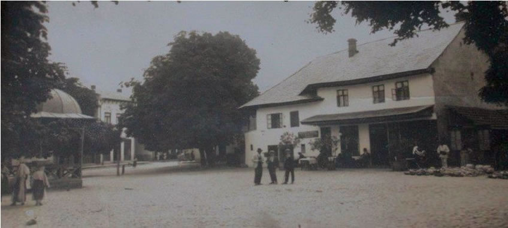
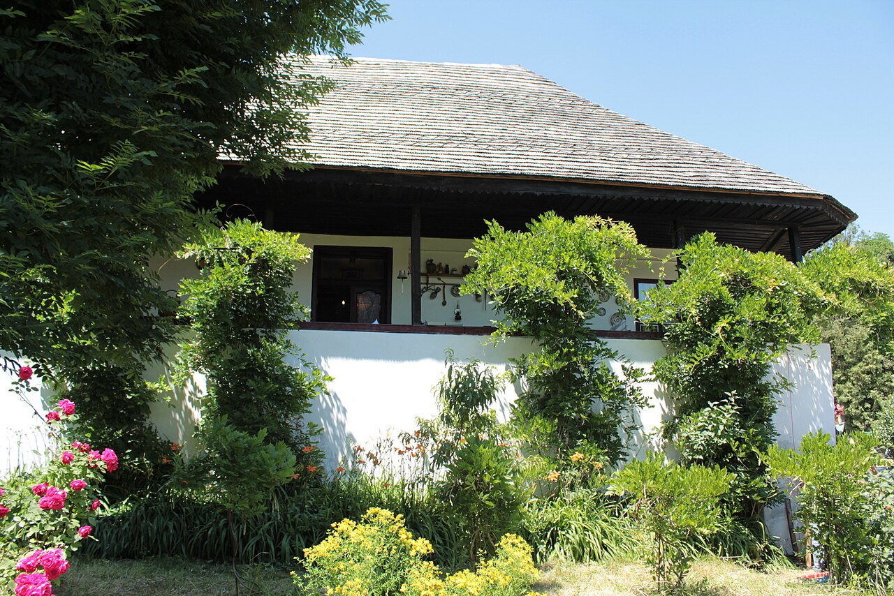

Despre Casa Goangă
Casa Goangă este o clădire istorică importantă din Curtea de Argeș, asociată cu familia lui Florian Ștefănescu-Goangă. Aceasta reflectă stilul de viață și cultura unei perioade importante din istoria orașului.
Clădirea este considerată parte a patrimoniului local și contribuie la identitatea culturală a zonei.
Importanță
Casa Goangă este valoroasă nu doar prin arhitectura sa, ci și prin legătura cu personalități importante din România.
Ea oferă o perspectivă asupra dezvoltării culturale și educaționale din trecut.
Știai că?
Casa Goangă este legată de familia unui important psiholog român, contribuind indirect la istoria științei din România.